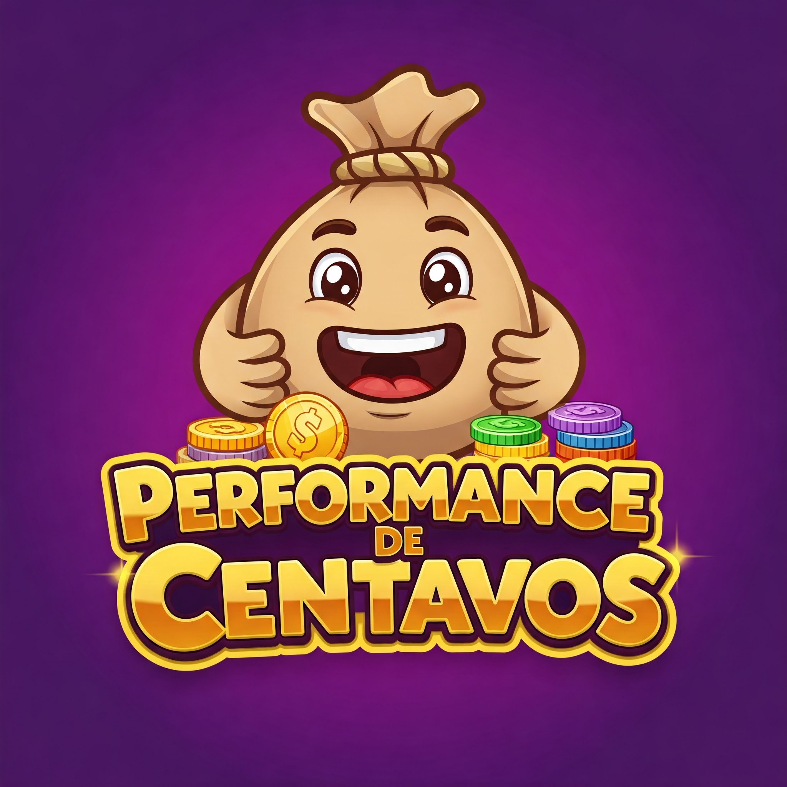

Head, shoulders, coins e frações, na Performance de Centavos, testamos mil funções!
Instruções de jogo
- Resolva a equação matemática que aparece na tela
- Verifique em qual quadrado está a resposta correspondente
- Diga a localização do quadrado (em inglês)
- Torça para ser bom em matemática
- Weeeeeeeeeeeeeeeeee